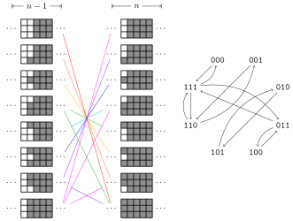

插头 DP
有些 状压 DP 问题要求我们记录状态的连通性信息，这类问题一般被形象的称为插头 DP 或连通性状态压缩 DP。例如格点图的哈密顿路径计数，求棋盘的黑白染色方案满足相同颜色之间形成一个连通块的方案数，以及特定图的生成树计数等等。这些问题通常需要我们对状态的连通性进行编码，讨论状态转移过程中连通性的变化。
骨牌覆盖与轮廓线 DP
温故而知新，在开始学习插头 DP 之前，不妨先让我们回顾一个经典问题。
例题 「HDU 1400」Mondriaan’s Dream
题目大意：在 \(N\times M\) 的棋盘内铺满 \(1\times 2\) 或 \(2\times 1\) 的多米诺骨牌，求方案数。
当 \(n\) 或 \(m\) 规模不大的时候，这类问题可以使用 状压 DP 解决。逐行划分阶段，设 \(dp(i,s)\) 表示当前已考虑过前 \(i\) 行，且第 \(i\) 行的状态为 \(s\) 的方案数。这里的状态 \(s\) 的每一位可以表示这个这个位置是否已被上一行覆盖。

另一种划分阶段的方法是逐格 DP，或者称之为轮廓线 DP。\(dp(i,j,s)\) 表示已经考虑到第 \(i\) 行第 \(j\) 列，且当前轮廓线上的状态为 \(s\) 的方案数。
虽然逐格 DP 中我们的状态增加了一个维度，但是转移的时间复杂度减少为 \(O(1)\)，所以时间复杂度未变。我们用 \(f_0\) 表示当前阶段的状态，用 \(f_1\) 表示下一阶段的状态，\(u = f_0(s)\) 表示当前枚举的函数值，那么有如下的状态转移方程：
1 2 3 4 5 6 | |
观察到这里不放和竖放的方程可以合并。
例题代码
1 2 3 4 5 6 7 8 9 10 11 12 13 14 15 16 17 18 19 20 21 22 23 24 25 26 27 | |
习题 「SRM 671. Div 1 900」BearDestroys
题目大意：给定 \(n\times m\) 的矩阵，每个格子有 E 或 S。
对于一个矩阵，有一个计分方案。按照行优先的规则扫描每个格子，如果这个格子之前被骨牌占据，则 skip。
否则尝试放多米诺骨牌。如果放骨牌的方向在矩阵外或被其他骨牌占据，则放置失败，切换另一种方案或 skip。
如果是 E 则优先放一个 \(1\times 2\) 的骨牌，
如果是 S 则优先放一个 \(2\times 1\) 的骨牌。
一个矩阵的得分为最后放的骨牌数。
问所有 \(2^{nm}\) 种矩阵的得分的和。
术语
阶段：动态规划执行的顺序，后续阶段的结果只与前序阶段的结果有关（无后效性）。很多 DP 问题可以有多种划分阶段的方式。例如在背包问题中，我们通常既可以按照物品划分阶段，也可以按照背包容量划分阶段（外层循环先枚举什么）。而在多米诺骨牌问题中，我们可以按照行、列、格子以及对角线等特征划分阶段。
轮廓线：已决策状态和未决策状态的分界线。

插头：一个格子某个方向的插头存在，表示这个格子在这个方向与相邻格子相连。
路径模型
多条回路
例题
例题 「HDU 1693」Eat the Trees
题目大意：求用若干条回路覆盖 \(N\times M\) 棋盘的方案数，有些位置有障碍。
严格来说，多条回路问题并不属于插头 DP，因为我们只需要和上面的骨牌覆盖问题一样，记录插头是否存在，然后成对的合并和生成插头就可以了。
注意对于一个宽度为 \(m\) 的棋盘，轮廓线的宽度为 \(m+1\)，因为包含 \(m\) 个上插头，和 \(1\) 个左插头。注意，当一行迭代完成之后，最右边的左插头通常是不合法的状态，同时我们需要补上下一行第一个左插头，这需要我们调整当前轮廓线的状态，通常是所有状态进行左移，我们把这个操作称为滚动 roll()。
例题代码
1 | |
习题
习题 「ZJU 4231」The Hive II
题目大意：同上题，但格子变成了六边形。
一条回路
例题
例题 「Andrew Stankevich Contest 16 - Problem F」Pipe Layout
题目大意：求用一条回路覆盖 \(N\times M\) 棋盘的方案数。
在上面的状态表示中我们每合并一组连通的插头，就会生成一条独立的回路，因而在本题中，我们还需要区分插头之间的连通性（出现了！）。这需要我们对状态进行额外的编码。
状态编码
通常的编码方案有括号表示和最小表示，这里着重介绍泛用性更好的最小表示。我们用长度 \(m+1\) 的整形数组，记录轮廓线上每个插头的状态，\(0\) 表示没有插头，并约定连通的插头用相同的数字进行标记。
那么下面两组编码方式表示的是相同的状态：
0 3 1 0 1 30 1 2 0 2 1
我们将相同的状态都映射成字典序最小表示，例如在上例中的 0 1 2 0 2 1 就是一组最小表示。
我们用 b[] 数组表示轮廓线上插头的状态。bb[] 表示在最小表示的编码的过程中，每个数字被映射到的最小数字。注意 \(0\) 表示插头不存在，不能被映射成其他值。
代码实现
1 2 3 4 5 6 7 8 9 10 11 12 13 14 15 16 17 18 19 20 21 22 | |
我们注意到插头总是成对出现，成对消失的。因而 0 1 2 0 1 2 这样的状态是不合法的。合法的状态构成一组括号序列，实际中合法状态可能是非常稀疏的。
手写哈希
在一些 状压 DP 的问题中，合法的状态可能是稀疏的（例如本题），为了优化时空复杂度，我们可以使用哈希表存储合法的 DP 状态。对于 C++ 选手，我们可以使用 std::unordered_map，当然也可以直接手写，这样可以灵活的将状态转移函数也封装于其中。
代码实现
1 2 3 4 5 6 7 8 9 10 11 12 13 14 15 16 17 18 19 20 21 22 23 24 25 26 27 | |
上面的代码中：
MaxSZ表示合法状态的上界，可以估计，也可以预处理出较为精确的值。Prime一个小于MaxSZ的大素数。head[]表头节点的指针。next[]后续状态的指针。state[]节点的状态。key[]节点的关键字，在本题中是方案数。clear()初始化函数，和手写邻接表类似，我们只需要初始化表头节点的指针。push()状态转移函数，其中d是一个全局变量（偷懒），表示每次状态转移所带来的增量。如果找到的话就+=，否则就创建一个状态为s，关键字为d的新节点。roll()迭代完一整行之后，滚动轮廓线。
关于哈希表的复杂度分析，以及开哈希和闭哈希的不同，可以参见 《算法导论》 中关于散列表的相关章节。
状态转移
代码实现
1 2 3 4 5 6 7 8 9 10 11 12 13 14 15 16 17 18 19 20 21 22 23 24 25 26 27 28 29 | |
例题代码
1 | |
习题
习题 「Ural 1519」Formula 1
题目大意：求用一条回路覆盖 \(N\times M\) 棋盘的方案数，有些位置有障碍。
习题 「USACO 5.4.4」Betsy's Tours
题目大意：一个 \(N\times N\) 的方阵（\(N\le 7\)），求从左上角出发到左下角结束经过每个格子的路径总数。虽然是一条路径，但因为起点和终点固定，可以转化为一条回路问题。
习题 「POJ 1739」Tony's Tour
题目大意：一个 \(N\times M\) 的棋盘，求从左下角出发到右下角结束经过每个格子的路径总数，有些位置有障碍。
习题 「USACO 6.1.1」Postal Vans
题目大意：求用一条有向回路覆盖 \(4\times N\) 的棋盘的方案数，需要高精度。
习题 「ProjectEuler 393」Migrating ants
题目大意：用多条回路覆盖 \(n\times n\) 的方阵，每个有 \(m\) 条回路的方案对答案的贡献是 \(2^m\)，求所有方案的贡献和。
一条路径
例题
例题 「ZOJ 3213」Beautiful Meadow
题目大意：一个 \(N\times M\) 的方阵（\(N,M\le 8\)），每个格点有一个权值，求一段路径，最大化路径覆盖的格点的权值和。
本题是标准的一条路径问题，在一条路径问题中，编码的状态中还会存在不能配对的独立插头。需要在状态转移函数中，额外讨论独立插头的生成、合并与消失的情况。独立插头的生成和消失对应着路径的一端，因而这类事件不会发生超过两次（一次生成一次消失，或者两次生成一次合并），否则最终结果一定会出现多个连通块。
我们需要在状态中额外记录这类事件发生的总次数，可以将这个信息编码进状态里（注意，类似这样的额外信息在调整轮廓线的时候，不需要跟着滚动），当然也可以在 hashTable 数组的外面加维。下面的范例程序中我们选择后者。
状态转移
代码实现
1 2 3 4 5 6 7 8 9 10 11 12 13 14 15 16 17 18 19 20 21 22 23 24 25 26 27 28 29 30 31 32 33 34 35 36 37 38 39 40 41 42 43 44 45 46 47 48 49 50 51 52 | |
例题代码
1 | |
习题
习题 「NOI 2010 Day2」旅行路线
题目大意：\(n\times m\) 的棋盘，棋盘的每个格子有一个 01 权值 T[x][y]，要求寻找一个路径覆盖，满足：
- 第 i 个参观的格点 (x, y)，满足 T[x][y]= L[i]
- 路径的一端在棋盘的边界上
求可行的方案数。
染色模型
除了路径模型之外，还有一类常见的模型，需要我们对棋盘进行染色，相邻的相同颜色节点被视为连通。在路径类问题中，状态转移的时候我们枚举当前路径的方向，而在染色类问题中，我们枚举当前节点染何种颜色。在染色模型中，状态中处在相同连通性的节点可能不止两个。但总体来说依然大同小异。我们不妨来看一个经典的例题。
例题「UVA 10572」Black & White
例题 「UVA 10572」Black & White
题目大意：在 \(N\times M\) 的棋盘内对未染色的格点进行黑白染色，要求所有黑色区域和白色区域连通，且任意一个 \(2\times 2\) 的子矩形内的颜色不能完全相同（例如下图中的情况非法），求合法的方案数，并构造一组合法的方案。

状态编码
我们先考虑状态编码。不考虑连通性，那么就是 SGU 197. Nice Patterns Strike Back，不难用 状压 DP 直接解决。现在我们需要在状态中同时体现颜色和连通性的信息，考察轮廓线上每个位置的状态，二进制的每 Offset 位描述轮廓线上的一个位置，因为只有黑白两种颜色，我们用最低位的奇偶性表示颜色，其余部分示连通性。
考虑第一行上面的节点，和第一列左侧节点，如果要避免特判的话，可以考虑引入第三种颜色区分它们，这里我们观察到这些边界状态的连通性信息一定为 0，所以不需要对第三种颜色再进行额外编码。
在路径问题中我们的轮廓线是由 \(m\) 个上插头与 \(1\) 个左插头组成的。本题中，由于我们还需要判断当前格点为右下角的 \(2\times 2\) 子矩形是否合法，所以需要记录左上角格子的颜色，因此轮廓线的长度依然是 \(m+1\)。
这样的编码方案中依然保留了很多冗余信息，（连通的区域颜色一定相同，且左上角的格子只需要颜色信息不需要连通性），但是因为已经用了哈希表和最小表示，对时间复杂度的影响不大，为了降低编程压力，就不再细化了。
在最多情况下（例如第一行黑白相间），每个插头的连通性信息都不一样，因此我们需要 \(4\) 位二进制位记录连通性，再加上颜色信息，本题的 Offset 为 \(5\) 位。
代码实现
1 2 3 4 5 6 7 8 9 10 11 12 13 14 15 16 17 18 19 20 21 22 23 24 25 26 | |
手写哈希
因为需要构造任意一组方案，这里的哈希表我们需要添加一组域 pre[] 来记录每个状态在上一阶段的任意一个前驱。
代码实现
1 2 3 4 5 6 7 8 9 10 11 12 13 14 15 16 17 18 19 20 21 22 23 24 25 26 27 28 29 30 31 | |
方案构造
有了上面的信息，我们就可以容易的构造方案了。首先遍历当前哈希表中的状态，如果连通块数目不超过 \(2\)，那么统计进方案数。如果方案数不为 \(0\)，我们倒序用 pre 数组构造出方案，注意每一行的末尾因为我们执行了 Roll() 操作，颜色需要取 c[j+1]。
代码实现
1 2 3 4 5 6 7 8 9 10 11 12 13 14 15 16 17 18 19 20 21 22 23 24 25 | |
状态转移
我们记：
cc当前正在染色的格子的颜色lf左边格子的颜色up上边格子的颜色lu左上格子的颜色
我们用 \(-1\) 表示颜色不存在。接下来讨论状态转移，一共有三种情况，合并，继承与生成：
状态转移-代码
1 2 3 4 5 6 7 8 9 10 11 12 13 14 15 16 17 18 19 20 21 22 | |
对于最后一种情况需要注意的是，如果已经生成了一个封闭的连通区域，那么我们不能再使用她的颜色染色，否则这种颜色会出现两个连通块。我们似乎需要额度记录这种事件，可以参考 「ZOJ 3213」Beautiful Meadow 中的做法，再开一维记录这个事件。不过利用本题的特殊性，我们也可以特判掉。
特判-代码
1 2 3 4 5 6 7 8 9 10 11 12 13 14 15 16 17 18 | |
进一步讨论连通块消失的情况。每当我们对一个格子进行染色后，如果没有其他格子与其上侧的格子连通，那么会形成一个封闭的连通块。这个事件仅在最后一行的最后两列时可以发生，否则后续为了不出现 \(2\times 2\) 的同色连通块，这个颜色一定会再次出现，除了下面的情况：
1 2 3 | |
我们特判掉这种情况，这样在本题中，就可以偷懒不用记录之前是否已经生成了封闭的连通块了。
例题代码
1 | |
习题
习题 「Topcoder SRM 312. Div1 Hard」CheapestIsland
题目大意：给一个棋盘图，每个格子有权值，求权值之和最小的连通块。
习题 「JLOI 2009」神秘的生物
题目大意：给一个棋盘图，每个格子有权值，求权值之和最大的连通块。
图论模型
例题 「NOI 2007 Day2」生成树计数
题目大意：某类特殊图的生成树计数，每个节点恰好与其前 \(k\) 个节点之间有边相连。
例题 「2015 ACM-ICPC Asia Shenyang Regional Contest - Problem E」Efficient Tree
题目大意：给出一个 \(N\times M\) 的网格图，以及相邻四连通格子之间的边权。 对于一颗生成树，每个节点的得分为 1+[有一条连向上的边]+[有一条连向左的边]。 生成树的得分为所有节点的得分之积。
你需要求出：最小生成树的边权和，以及所有最小生成树的得分之和。 （\(n\le 800,m\le 7\)）
实战篇
例题
例题 「HDU 4113」Construct the Great Wall
题目大意：在 \(N\times M\) 的棋盘内构造一组回路，分割所有的 x 和 o。
有一类插头 DP 问题要求我们在棋盘上构造一组墙，以分割棋盘上的某些元素。不妨称之为修墙问题，这类问题既可视作染色模型，也可视作路径模型。
在本题中，如果视作染色模型的话，不仅需要额外讨论染色区域的周长，还要判断在角上触碰而导致不合法的情况（图 2）。另外与 「UVA 10572」Black & White 不同的是，本题中要求围墙为简单多边形，因而对于下面的回字形的情况，在本题中是不合法的。
1 2 3 4 | |
因而我们使用路径模型，转化为 一条回路 来处理。
我们沿着棋盘的交叉点进行 DP（因而长宽需要增加 \(1\)），每次转移时，需要保证所有的 x 在回路之外，o 在回路之内。因此我们还需要维护当前位置是否在回路内部。对于这个信息我们可以加维，也可以直接统计轮廓线上到这个位置之前出现下插头次数的奇偶性（射线法）。
例题代码
1 2 3 4 5 6 7 8 9 10 11 12 13 14 15 16 17 18 19 20 21 22 23 24 25 26 27 28 29 30 31 32 33 34 35 36 37 38 39 40 41 42 43 44 45 46 47 48 49 50 51 52 53 54 55 56 57 58 59 60 61 62 63 64 65 66 67 68 69 70 71 72 73 74 75 76 77 78 79 80 81 82 83 84 85 86 87 88 89 90 91 92 93 94 95 96 97 98 99 100 101 102 103 104 105 106 107 108 109 110 111 112 113 114 115 116 117 118 119 120 121 122 123 124 125 126 127 128 129 130 131 132 133 134 135 136 137 138 139 140 141 142 143 144 145 146 147 | |
习题
习题 「HDU 4796」Winter's Coming
题目大意：在 \(N\times M\) 的棋盘内对未染色的格点进行黑白灰染色，要求所有黑色区域和白色区域连通，且黑色区域与白色区域分别与棋盘的上下边界连通，且其中黑色区域与白色区域不能相邻。每个格子有对应的代价，求一组染色方案，最小化灰色区域的代价。

习题 「ZOJ 2125」Rocket Mania
题目大意：\(9\times6\) 的地图上每个格子里是一种管道（-,T,L,+ 型或没有），可以把管道旋转 0°,90°,180°,270°, 问地图最多能有几行的右边界与第 X 行的左边界通过管道相连。
习题 「ZOJ 2126」Rocket Mania Plus
题目大意：\(9\times6\) 的地图上每个格子里是一种管道（-,T,L,+ 型或没有），可以把管道旋转 0°,90°,180°,270°, 问地图最多能有几行的右边界与左边界通过管道相连。
习题 「World Finals 2009/2010 Harbin」Channel
题目大意：一张方格地图上用 . 表示空地、# 表示石头，找到最长的一条路径满足：
- 起点在左上角，终点在右下角。
- 不能经过石头。
- 路径自身不能在八连通的意义下成环。（即包括拐角处也不能接触）
习题 「HDU 3958」Tower Defence
题目大意：可以转化为求解一条从 \(\mathit{S}\) 到 \(\mathit{T}\) 的不能接触的最长路径，拐角处可以接触。
习题 「UVA 10531」Maze Statistics
题目大意：有一个 \(N\times M\) 的图，每个格子有独立概率 \(\mathit{p}\) 变成障碍物。你要从迷宫左上角走到迷宫右下角。求每个格子成为一个 有解迷宫（即起点终点四联通） 中的障碍物的概率。（\(N \le 5\)，\(M \le 6\)）
习题 「AIZU 2452」Pipeline Plans
题目大意：现有一共 12 种图案的瓷砖，每种瓷砖数量给定。要求铺到一块可视为 \(R\times C\) 网格图的矩形地板上，一个格子铺一块瓷砖，且左上角格子的中心与右下角格子的中心通过瓷砖图案上的线联通。\((2 \le R \times C \le 15)\)

习题 「SDOI 2014」电路板
题目大意：一块 \(N\times M\) 的电路板，上面有些位置是电线不能走的障碍，给定 \(K\) 个格子对，要求每对格子都有电线相连，且电线之间互不相交（允许一条电路线从上边界进入当前格子，从左边界离开这个格子，另外一条电路线可以从下边界进入格子，从右边界出去）。视电线为无向边，求满足要求的最短电线长度和方案数。
习题 「SPOJ CAKE3」Delicious Cake
题目大意：一块可视为 \(N\times M\) 网格的蛋糕，现沿着格线将蛋糕切成数块，问有多少种不同的切割方法。切法相同当且仅当切成的每块蛋糕都形状相同且在同一位置上。（\(min(N,M) \le 5, max(N,M) \le 130\)）
本章注记
插头 DP 问题通常编码难度较大，讨论复杂，因而属于 OI/ACM 中相对较为 偏门的领域。这方面最为经典的资料，当属 2008 年 陈丹琦 的集训队论文——基于连通性状态压缩的动态规划问题。其次，HDU 的 notonlysuccess 2011 年曾经在博客中连续写过两篇由浅入深的专题，也是不可多得的好资料，不过现在需要在 Web Archive 里考古。
多米诺骨牌覆盖
「HDU 1400」Mondriaan’s Dream 也出现在 《算法竞赛入门经典训练指南》 中，并作为《轮廓线上的动态规划》一节的例题。多米诺骨牌覆盖（Domino tiling） 是一组非常经典的数学问题，稍微修改其数据范围就可以得到不同难度，需要应用不同的算法解决的子问题。
当限定 \(m=2\) 时，多米诺骨牌覆盖等价于斐波那契数列。《具体数学》 中使用了该问题以引出斐波那契数列，并使用了多种方法得到其解析解。
当 \(m\le 10,n\le 10^9\) 时，可以将转移方程预处理成矩阵形式，并使用 矩阵乘法进行加速。

当 \(n,m\le 100\)，可以用 FKT Algorithm 计算其所对应平面图的完美匹配数。
- 「51nod 1031」骨牌覆盖
- 「51nod 1033」骨牌覆盖 V2|「Vijos 1194」Domino
- 「51nod 1034」骨牌覆盖 V3|「Ural 1594」Aztec Treasure
- Wolfram MathWorld, Chebyshev Polynomial of the Second Kind
一条路径
「一条路径」是 哈密度路径（Hamiltonian Path） 问题在 格点图（Grid Graph） 中的一种特殊情况。哈密顿路径的判定性问题是 NP-complete 家族中的重要成员。Niconico 上有一个『フカシギの数え方』おねえさんといっしょ！みんなで数えてみよう（和大姐姐一起学习计算系列）的科普向视频，就使用这个问题作为例子，来说明 NPC 问题的计算时间如何随着问题的规模的线性增长而指数增长。